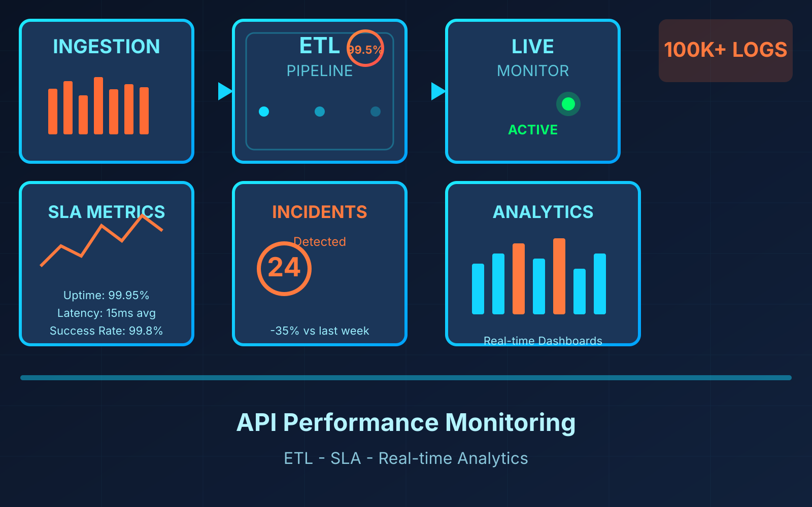
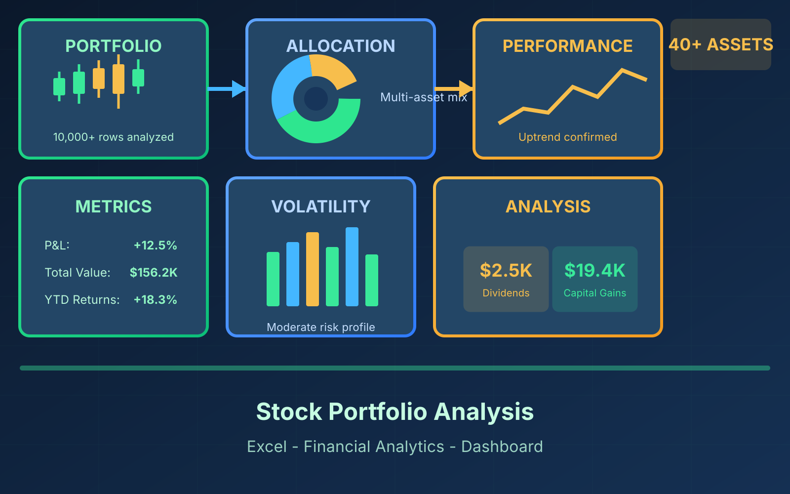
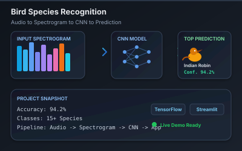

Hi, I'm Karthick Raja
I'm a Computer Science student from Chennai who loves working with data. I build analytics dashboards and data-driven tools using Python and SQL.
About Me
I love working with data and building things that are actually useful.
I'm a final-year Computer Science student at Hindusthan Institute of Technology. I enjoy turning raw data into clear results — whether it's a model, a chart, or an app.
I've built end-to-end projects like an API monitoring system, stock market dashboards, and AI audio classifiers. I love learning new things and solving real problems with data and analytics.
My Skills
Tools and technologies I use regularly.
My Projects
Click on a project to see more details.

An end-to-end ETL pipeline for 100K+ API log records with automated validation and data quality checks. Achieved 99.5% data consistency and designed dashboards to analyze SLA, latency, and failure rates with real-time monitoring and incident detection capabilities.

A comprehensive portfolio analysis dashboard built entirely in Microsoft Excel — designed to help investors track performance, visualize trends, and make data-backed decisions. Processes 10,000+ rows with advanced formulas and interactive visualizations.

A machine learning model using MFCC-based audio feature extraction to identify and classify bird species from audio recordings. Trained on multiple bird species and deployed as an interactive Streamlit web application for real-time predictions.
A production-ready full-stack application that leverages LLMs to analyze resumes for ATS compatibility. It scores resumes against Data Analyst role profiles, extracts critical insights from PDFs, and generates intelligent rewrite suggestions.
No projects available for this filter.
My Education
From school to engineering college — my learning journey so far.
Get in touch
Have a project or job opportunity? Feel free to reach out. I'd love to hear from you.
Looking for internships & jobs
I'm a final-year student looking for opportunities in Data Analytics and Business Intelligence. Let's talk!
Send a Message